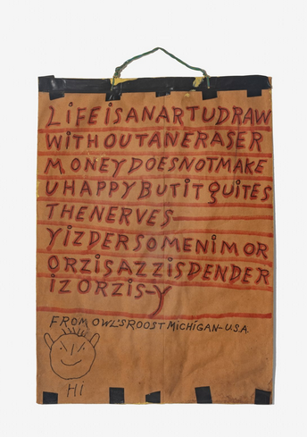

Life is an Art: The Collection of Jan Petry
Few have an eye like late, long-time Intuit Art Museum board member Janet (“Jan”) Petry (American, 1939–2024). Her collection included paintings, drawings and sculptures by major figures in American self-taught art, such as Emery Blagdon, James Castle, Ulysses Davis, Charles Dellschau, William Hawkins and Martín Ramírez. She actively collected artists who were residents at Gugging, a studio serving artists with disabilities in Austria. Life is an Art features objects that reflect Petry’s passion for folk art, design, furniture and maritime themes, offering a glimpse into the vision of a dedicated collector.
In addition to donating her personal collection, Petry helped form the vision of Intuit Art Museum (IAM) through her long tenure as Exhibitions Committee chair, involvement in the Collections & Acquisitions Committee, and role as board chair (2016–19). As Capital Campaign co-chair, Petry actively supported the renovation, expansion and rebranding of the Museum. This exhibition is on view in the named Jan Petry Gallery. Enhancing the Museum’s collection was important to Petry, who donated more than 60 works to Intuit between 2004 and 2025. She provided funds for the purchase of a sculpture by Chicago artist Roman Villarreal and supported the Young Professional (YoPro) Board’s acquisition of a collage by Milwaukee-based artist Della Wells.
The objects on view in Life is an Art tell the story of Petry’s collecting. She once remarked: “part of the pleasure of collecting is sharing it with everyone. ” Please join us in celebrating her gifts.